Elemente
Elemente sind grundlegende Bausteine des Studios. Man kann die Elemente von der Elementliste links in ein freies Feld in einem Abschnitt ziehen oder durch einen Klick auf das Element in der Liste dieses zum ausgewählten Abschnitt hinzufügen.
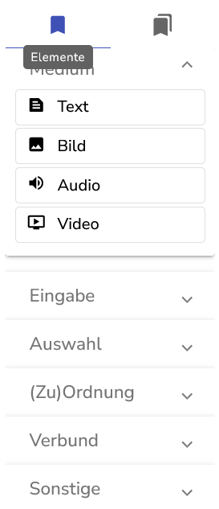
Um die Elementliste zu sehen muss der erweiterte Modus ausgewählt sein.
Es folgt eine Liste aller Elemente und ihrer spezifischen Einstellungen. Weitere Informationen zu den allgemeinen Elementeinstellungen gibt es hier
Medien
Text
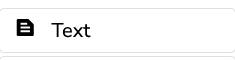
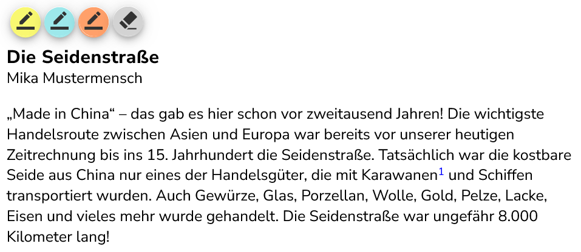
Textelemente werden benutzt um Text anzuzeigen. Dafür gibt es im Studio einen eigenen Texteditor, den man mit Doppelklick auf das Textelement öffnet oder indem man auf das Symbol klickt.
In den Elementeinstellungen gibt es folgende Einstellungen:
Es gibt die Möglichkeit den Text innerhalb des Elements in mehrere Spalten zu teilen. Man sollte abwägen ob dies besser ist, als im Raster des Abschnitts eine weitere Spalte mit einem eigenen Textelement hinzuzufügen.
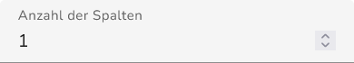
Bild
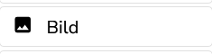
Bildelemente zeigen Dateien in üblichen Formaten wie jpg, png oder gif an. Um ein Bildelement einzufügen muss man eine Bilddatei auswählen, die dann hochgeladen wird.
Audio
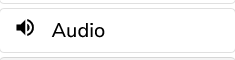
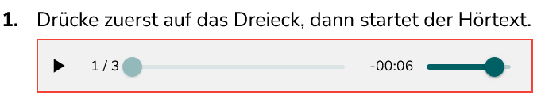
Audioelemente spielen Dateien in üblichen Formaten wie mp3 oder wav. Dabei sind komprimierte Formate wie mp3 stark empfohlen, da die Audiodateien sonst sehr viel Bandbreite einnehmen. Um ein Audioelement einzufügen muss man eine Audiodatei auswählen, die dann hochgeladen wird.
Video

Videoelemente spielen Videodateien ab. Um ein Videoelement einzufügen muss man eine Videodatei auswählen, die dann hochgeladen wird.
Eingabe
Eingabefeld
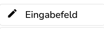
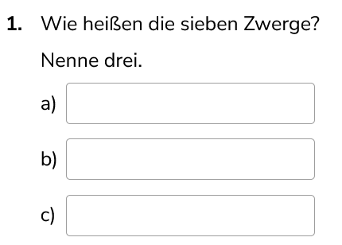
Eingabefelder sind Elemente für einzeilige Textantworten.
Elementspezifische Einstellungen
Ein Eingabeelement lässt sich mit einer Beschriftung versehen, die verschwindet, sobald etwas in dem Eingabeelement eingetragen wird.
Eingabeelemente können als schreibgeschützt eingestellt werden, damit der Inhalt nicht verändert werden kann, z.B. wenn man ein Beispiel darstellen möche.
Eingabeelemente können eine Vorbelegung erhalten. Das ist nützlich für Beispiele oder Aufgaben, bei denen Sätze korrigiert werden sollen.
Meist sind die Eingabeelemente umrandet dargestellt, es gibt aber auch die Option “ausgefüllt”, die nur eine Unterstreichung bietet.
Eingabefelder (nicht -bereiche) können eine Maximallänge erhalten. Wird diese überschritten erscheint eine Warnung. Alternativ kann man auch die Eingabe auf die Maximallänge begrenzen. Standardmäßig ist die Eingabe unbegrenzt.
Eingabeelemente können mit einer Eingabehilfe versehen werden. Dazu muss zunächst die IQB-Tastatur aktiviert werden, indem man “Tastatur einblenden” auswählt, dann kann die Eingabehilfe eingestellt werden. Dazu gibt es eine Reihe von Voreinstellungen oder die Möglichkeit eine eigene Zeichenkette einzugeben indem man “Eigene Zeichen” auswählt. Anschließend kann man noch die Position der Eingabehilfe verändern, Pfeiltasten zum Navigieren innerhalb der Eingabe und eine Löschtaste hinzufügen (nützlich für Aufgaben an mobilen Geräten) und die Bearbeitung anderer Zeichen verhindern. Letzteres bedeutet, dass nur die Zeichen aus der Eingabehilfe hinzugefügt oder entfernt werden können und kann z.B. verwendet werden bei Aufgaben, bei denen Satzzeichen in einen Satz eingefügt werden sollen.
Eingabebereich
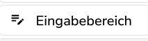
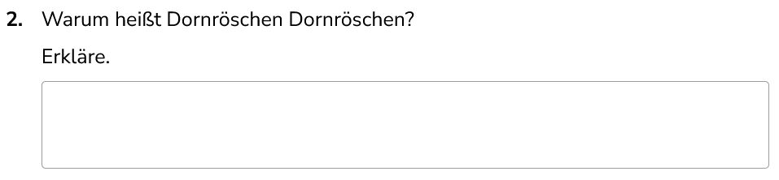
Eingabebereiche sind Elemente für mehrzeilige Textantworten.
Eingabebereiche teilen sich die meisten elementspezifischen Einstellungen mit Eingabefeldern, aber sie haben keine Einstellung für eine Maximallänge. Stattdessen gibt es die Möglichkeit die Anzahl der Zeilen zu bestimmen. Entweder man setzt die Anzahl der Zeilen manuell oder man lässt es dynamisch einstellen, indem man die erwartete Zeichenzahl eingibt, also die Anzahl von Zeichen in der längsten zu erwartenden Antwort. Der Eingabebereich wird darauf basierend automatisch mit genug Zeilen angezeigt, dass man diese Anzahl Zeichen eingeben kann.
Wort Korrigieren
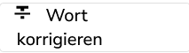
Das Korrekturelement zeigt einen Textabschnitt, der korrigiert werden kann. Wenn man ihn anklickt wird er durchgestrichen und man kann eine Korrektur eingeben. Üblicherweise wird für jedes Wort ein einzelnes Korrekturelement verwendet.
Die Beschriftung des Elements ist der zu korrigierende Textabschnitt.
Wie bei anderen Eingabeelementen kann man auch hier eine Eingabehilfe einstellen.
Formel
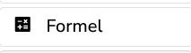
Das Formelelement ist gedacht für Antworten, die mathematische Formeln enthalten sollen. Wenn man es in der Vorschau oder im Test auswählt und auf das Sigma klickt erscheint ein Menü zum Einfügen der Formel.
Rechenkästchen
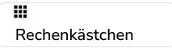

Das Rechenkästchenelement erzeugt eine Tabelle, in deren Zellen je eine Zahl oder ein Rechenzeichen steht. Es gibt Voreinstellungen, sodass man übliche Rechenverfahren wie Addition, Subtraktion und Multiplikation schriftlich rechnen kann.
Auswahl
Optionsfelder (MC)
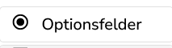
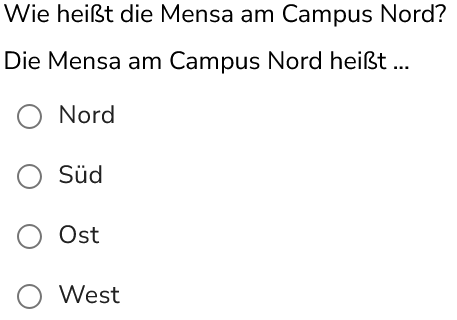
Optionsfelder erlauben die Auswahl von genau einer Option aus beliebig vielen.
Ein Optionsfeldelement kann beschriftet werden, die Beschriftung erscheint dann überhalb der Auswahloptionen. Im Feld “Option” lassen sich die einzelnen Optionen festlegen. Bei Optionsfeld mit Text gibt man sie ein und drückt dann Enter oder klickt auf das Plus. Für Optionsfelder mit Bilder gibt es zusätzlich einen Knopf zum Hochladen der Bilder. Jede Option bekommt ein Bild. Man kann die Optionen nachträglich bearbeiten, indem man das Symbol mit dem Schraubenschlüssel anklickt.
Es öffnet sich ein Dialog mit vereinfachtem Texteditor und, falls man Optionsfelder mit Bild benutzt, den Optionen “Bild laden”, “Bild entfernen” und “Bildposition”. Mit “Bild laden” wählt man das Bild für die ausgewählte Option aus. Mit “Bild entfernen” kann man das aktuell geladene Bild der ausgewählten Option löschen. Mit “Bildposition” kann man einstellen, wo das Bild in Relation zum Text stehen soll. Auch bei Optionsfeldern mit Bild kann man Text, zusätzlich zu den Bildern, einfügen.
Optionentabelle (CMC)
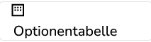
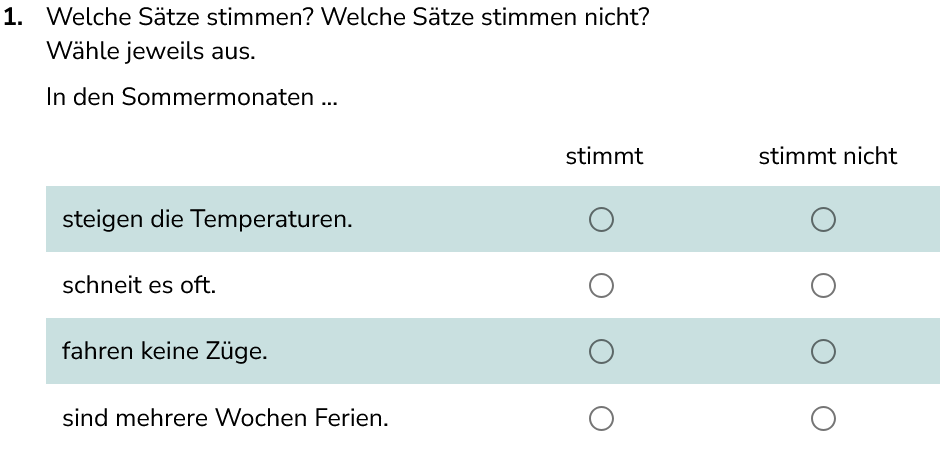
In einer Optionentabelle werden zeilenweise Antworten gegeben, indem man genau eine Spalte auswählt.
Eine Optionentabelle kann beschriftet werden, die Beschriftung erscheint dann ganz oben bei der Tabelle. Außerdem kann die erste Spalte eine gesonderte Überschrift kriegen. Im Allgemeinen werden aber Spaltenüberschriften unter “Optionen” festgelegt. Die Optionen sind analog zum Optionsfeld: Je Spalte gibt man die Überschrift ein und bestätigt mit Enter oder indem man auf das Plus klickt. Man kann auch Bilder als Überschriften hochladen. Die Zeilen werden genauso festgelegt.
Für lange Tabellen empfiehlt sich die Option “haftende Kopfzeile”. Ist dort ein Haken gesetzt werden die Spaltenüberschriften immer angezeigt, auch wenn man runterscrollt, bis man das Ende der Tabelle erreicht.
Zudem kann man einstellen wieviel Platz die erste Spalte anteilig an der Breite der Tabelle einnimmt. Dafür gibt es die Option “Anteil der ersten Spalte”. Die erste Spalte ist die statische, d.h. sie enthält die Items auf die mit Hilfe der anderen Spalten geantwortet werden soll. Sollte eine große Lücke zwischen der ersten Spalte und den anderen Spalten bestehen, oder die Spaltenübschriften der anderen Spalten zu gedrängt dastehen, dann kann man den Anteil der ersten Spalte verringern, um dies zu beheben.
Klappliste
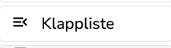
Die Klappliste ist ein Dropdown-Menü, d.h. wenn man es anklickt öffnet sich eine Liste von auswählbaren Optionen.
Die Klappliste hat eine Beschriftung, die man anpassen oder löschen kann. Es gibt ein Feld zum Eintragen von Optionen. Diese gibt man einzeln als Text ein und bestätigt mit Enter oder indem man das Plus anklickt. Bereits bestehende Optionen kann man mit Klick auf den Schraubenschlüssel bearbeiten oder mit dem Kreuz entfernen.
Außerdem kann man einstellen, welche Option standardmäßig ausgewählt ist, dazu das Menü “Vorbelegung” öffnen. Zudem kann man “Deselektion” erlauben, d.h. die Möglichkeit gewählte Optionen abzuwählen, sodass man auch keine Auswahl treffen kann.
Kontrollkästchen
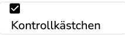
Ein Kontrollkästchen ist eine Box die man auswählen bzw. wieder abwählen kann.
Die Beschriftung eines Kontrollkästchens erscheint daneben.
Das Kontrollkästchen kann eine Vorbelegung erhalten: “Wahr” für angekreuzt bzw. ausgewählt oder “Falsch” für nicht angekreuzt bzw. nicht ausgewählt.
Außerdem kann man einstellen, dass bei Auswahl des Kontrollkästchens, also wenn es auf “Wahr” gestellt ist, die Beschriftung durchgestrichen wird. Dazu “Auswahl durchstreichen” anklicken.
Schieberegler
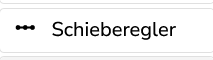
Beim Schieberegler kann man einen Punkt aus einem Wertebereich auswählen.
Dafür legt man in den Einstellungen einen Minimal- und einen Maximalwert fest. Man kann auswählen, ob diese Werte angezeigt werden.
Der “Zahlenstrahl-Modus” ist eine optische Veränderung, funktional bleibt der Schieberegler gleich.
Wird die Option “Zeige gewählten Wert” ausgewählt dann sieht man beim Bewegen des Punktes des aktuellen Wert als Tooltip.
Man kann eine Vorbelegung aus dem Wertebereich angeben, standardmäßig ist dies der Minimalwert.
Bildbereiche
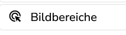
Ein Bildbereichelement besteht aus einem Bild, auf dem mehrere Bereiche existieren, die angeklickt werden können, um sie auszuwählen. Um dieses Element anzulegen, muss ein Bild hochgeladen werden.
Das Bild lässt sich nachträglich über die Elementeinstellungen durch ein anderes ersetzen.
Um einen Bereich hinzuzufügen wird das Plus Symbol unter “Bereiche” benutzt. Es erscheint ein Rechteck im Bild. In der Liste der Bereiche kann es mit Klick auf den Schraubenschlüssel bearbeitet werden. Dort gibt es folgende Optionen:
- Abstand von oben/links: Damit wird die Position des Bereichs relativ zur oberen bzw. linken Kante des Bildes eingestellt. Die Abstände werden in Pixeln gerechnet.
- Bereichsbreite/-höhe: Damit wird die Größe des Bereichs in Pixeln eingestellt.
- Bereichsform: Es gibt rechteckige, elliptische und dreieckige Bereiche.
- Rahmenbreite: Hier wird eingestellt wie dick der Rahmen des Bereiches ist. Wird 0 eingestellt, ist der Rahmen ausgeschaltet.
- Rahmenfarbe: Hier wird die Farbe des Rahmens als Hexadezimalcode eingegeben. Alternativ funktionieren auch die englischen Namen üblicher Farben.
- Füllfarbe: Die Farbe des Bereichs, wenn er ausgewählt ist. Die Farbe lässt sich so wie bei der Rahmenfarbe einstellen.
- Drehung: Hier wird eingestellt, um wieviel Grad der Berreich gedreht sein soll.
- Aktivierter Bereich: Ob der Bereich bereits ausgewählt ist oder nicht.
- Schreibgeschützt: Ob der Bereich ausgewählt bzw. abgewählt werden kann.
Zuordnung
Ablegeliste (Drag & Drop, DaD)
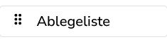
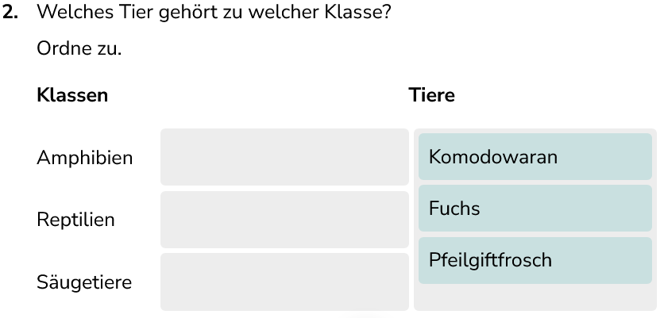
Ablegelisten sind Elemente, in denen Optionen liegen können, die man verschieben kann. Entweder passiert dies innerhalb der Ablegeliste, dann handelt es sich um eine Sortierliste. Oder man zieht die Optionen von einer Liste und legt sie in eine andere ab, das sogenannte Drag and Drop, kurz DaD oder D&D.
Unter “Vorbelegung” gibt man die Optionen für die Ablegeliste ein. Dafür klickt man auf das Plus Symbol oder gibt einen Text ein und drückt Enter. Die Optionen werden in einer Liste in den Eigenschaften der Ablegeliste angezeigt. Um die Optionen zu bearbeiten klickt man auf den Schraubenschlüssel, um sie zu löschen auf das Kreuz.
Wenn man die Optionen bearbeitet kann man auch ein Bild oder ein Audio hochladen. Zudem hat jede Option eine ID, so wie auch Elemente eine ID haben.
Unter “Verbundene Ablegelisten” wählt man, in welche Ablegelisten man Optionen ziehen kann. Wenn man Optionen in beide Richtungen bewegen können soll, dann muss man bei beiden Ablegelisten die jeweils andere als “Verbundene Ablegeliste” auswählen.
Die Einstellung “Ausrichtung” bestimmt, wie die Optionen in der Liste angeordnet sind. Horizontal und Vertikal ordnet die Optionen entsprechend an.
Wenn die Ablegeliste als Sortierliste funktionieren soll gibt es einen Kasten zum Ankreuzen dafür in den elementspezifischen Einstellungen. Eine Sortieraufgabe könnte so aussehen:
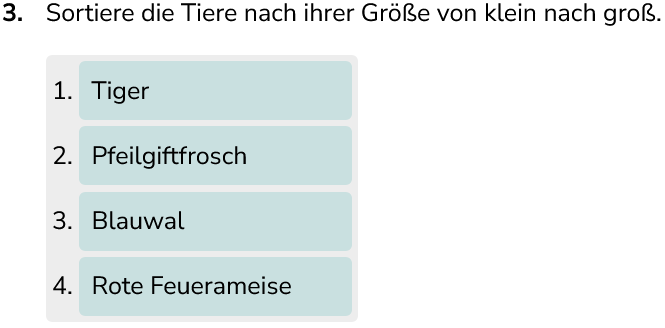
Außerdem kann eingestellt werden, dass nur ein Element in der Liste erlaubt ist. Dann kann dort nicht mehr als eine Option angelegt werden und wenn die Aufgabe bearbeitet wird kann in dieser Liste auch nur eine Option liegen.
Die Option “Verdrängen erlauben” setzt automatisch die Option “Nur ein Element”. Ist dies eingestellt, so wird, wenn man eine Option in eine Ablegeliste zieht, in der bereit eine Option liegt, die alte Option mit der neuen ersetzt. Die alte Option wird dann auf ihre vorherige Liste verdrängt.
Wenn man “Elemente kopieren” auswählt, dann wird, wenn man eine Option verschiebt, eine Kopie dieser Option angelegt. Dadurch kann man beim Bearbeiten der Aufgabe die Optionen beliebig oft verwenden.
Man kann die Optionen in der Ablegeliste automatisch nummerieren. Die Nummerierung erscheint unabhängig von der Ausrichtung der Optionen immer links von den Optionen. Die Nummerierung kann auch bei 0 beginnen, wenn man den Kasten “Nummerierung bei 0 beginnen” auswählt.
Wenn man Optionen von einer Ablegeliste zieht, dann werden die Listen, in denen man die Option ablegen kann, farblich hervorgehoben, wenn man “Potentielle Ablagen hervorheben” einstellt.
Verbund
Lückentext
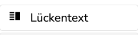
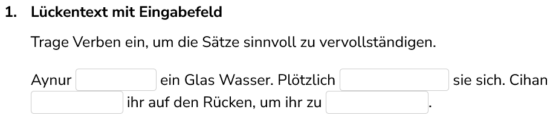
Lückentextelemente haben einen eigenen Editor, der wie der normale Texteditor funktioniert, bei dem man aber zusätzlich noch folgende Elemente einfügen kann:
- Eingabefeld
- Ablegeliste
- Optionsfeld
- Knopf
- Kontrollkästchen
Eingabefeld, Ablegeliste und Knopf entsprechen den Elementen, wie man sie auch normal im Studio anlegen kann.
Das Optionsfeld wird mit zwei Optionen erstellt, man kann diese wie beim normalen Optionsfeld bearbeiten. Allerdings werden sie hier durch Anklicken ausgewählt und dann farblich hinterlegt. Alternativ kann man auch auswählen, dass die gewählte bzw. nicht gewählte Option durchgestrichen wird.
Das Kontrollkästchen erscheint ebenfalls ohne Kästchen, aber wenn man es anklickt wird es farblich markiert. Alternativ kann es auch durchgestrichen werden.
Tabelle
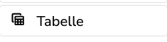
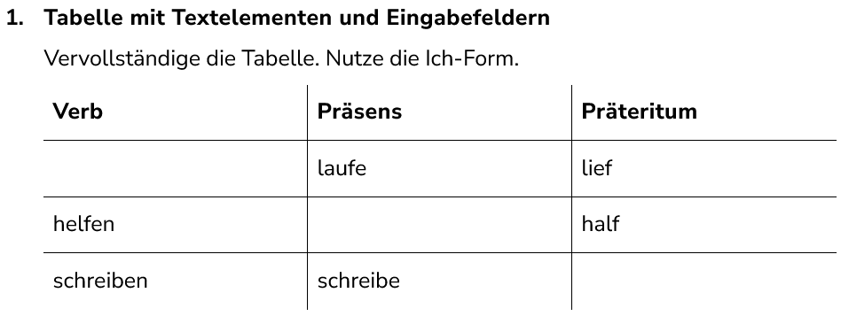
Ein Tabellenelement besteht aus mehreren Zeilen und Spalten, die in einem Raster angeordnet sind und durch Linien unterteilt werden. Dieses Raster ist unabhängig vom normalen Raster im Studio, d.h. ein Tabellenelement kann eine Zelle im Raster in mehrere Zellen unterteilen.
In den Elementeinstellungen lassen sich über die Schaltfläche “Elemente anpassen” neue Elemente in die Tabelle einfügen. Die Einstellungen für die Elemente sind identisch zu den normalen Einstellungen, aber die Größe der Elemente ist fest an die Größe der Tabellenzelle gebunden, die Elemente füllen die Zelle immer ganz aus. Um Elemente zu löschen nutzt man ebenfalls die Schaltfläche “Elemente anpassen”.
Auch in den Elementeinstellungen kann man die Anzahl der Zeilen und Spalten bestimmen. Alle Zeilen und Spalten können, ähnlich wie im normalen Raster, eine anteilige oder eine feste Größe in Pixeln erhalten.
Standardmäßig wird die Tabelle ohne äußere Ränder angezeigt, man kann aber auch “Tabellenränder zeichnen” auswählen, dann werden die äußeren Ränder eingezeichnet.
In den Gestaltungseinstellungen für das Tabellenelement kann man das Design der Rahmen anpassen. Die Einstellung “Radius” bestimmt die Krümmung der Linien, die die einzelnen Zellen umgeben. Die Farbe der Linien kann als Hexadezimalcode oder mit englischen Bezeichnungen angegeben werden. Der “Stil” der Linie drückt aus, ob sie durchgezogen (solid) oder gepunktet (dotted) oder anders gestaltet ist. Die Stärke gibt an, wie dick die Linien der Tabelle gezeichnet sind.
Sonstige
Knopf
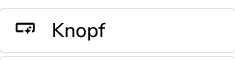
Das Knopfelement wird benutzt um Teile der Aufgabe oder des Tests zu steuern, etwa um zur nächsten Seite zu springen.
Knöpfe können dargestellt werden als Knopf, Bild (muss hochgeladen werden) oder Hyperlink. Die Beschriftung kann hochgestellt oder tiefgestellt werden.
Unter “Tooltip” kann ein Tooltip hinzugefügt werden, also ein Text der angezeigt wird, wenn man mit dem Mauszeiger über das Knopfelement fährt. Der Tooltip kann über oder unter dem Knopf angezeigt werden.
Unter “Aktion” wird festgelegt, was passiert, wenn man den Knopf anklickt. Dies sind die Optionen:
- Unitnavigation: Verschiedene Optionen zu anderen Units, also Aufgaben im Test, zu springen
- Seitennavigation: Als Optionen erscheinen die Seiten der Aufgabe, bei Knopfdruck gelangt man dorthin
- Textabschnitt hervorheben: Als Option erscheinen die zur Hervorhebung festgelegten Textabschnitte.
- Zustandsvariable ändern: Hier kann man eine Zustandsvariable wählen und welchen Wert sie bei Knopfdruck annehmen soll
Rahmen
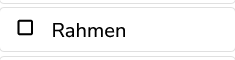
Rahmen bieten die Möglichkeit Linien am Rand von Spalten und Zeilen zu ziehen. Die Umrandungen umgeben dementsprechend eine Zelle (hier die Zweite):
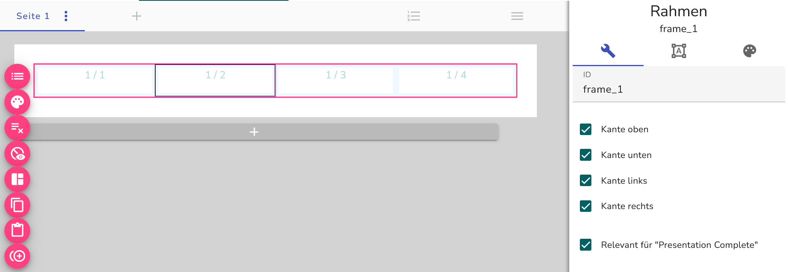
Rahmen können in ihrer Farbe und Stärke sowie im Radius und Stil variiert werden. Dies kann im Bereich des -Symbol vorgenommen werden.
Zudem kann eingestellt werden an welchen Kanten der Layout-Zelle der Rahmen angezeigt wird.
Geometrie

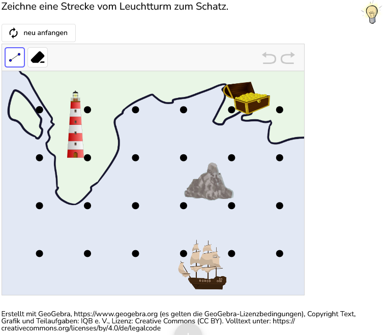
Mit der Geometrie-Funktion können GGB-Datein in das Studio eingefügt werden. In der GeoGebra-Anleitung ist das Anlegen dieser Datein nachzulesen.
Nach dem Einbetten der Datei können im Studio weitere Einstellungen gemacht werden:
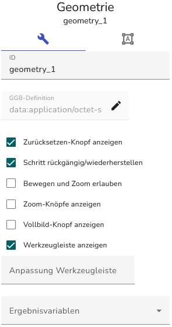
Auslöser (Trigger)
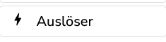
Auslöser können in Abschnitte gelegt werden, um diese mit Aktionen zu verbinden. Diese Aktionen werden ausgelöst, sobald der Abschnitt angezeigt wird.
Es kann zwischen verschiedenen Aktionen gewählt werden:
- Textabschnitt hervorheben: Die zur Hervorhebung festgelegten Textabschnitte (Aktionsparameter) erscheinen.
- Hervorhebungen ausblenden: Die Hervorhebung wird ausgeblendet sobald der Trigger ausgelöst wird.
- Zustandsvariable ändern: Hier kann man eine Zustandsvariable wählen und welchen Wert sie bei Knopfdruck annehmen soll.